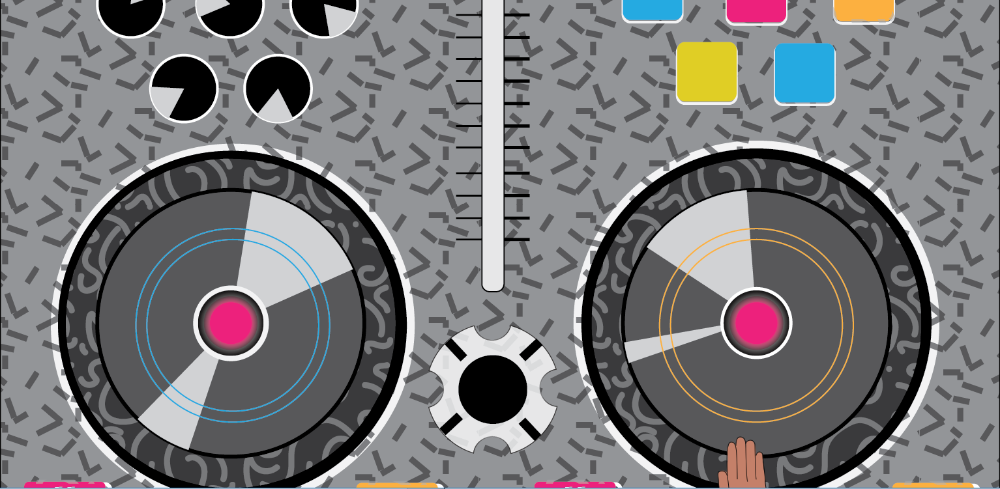
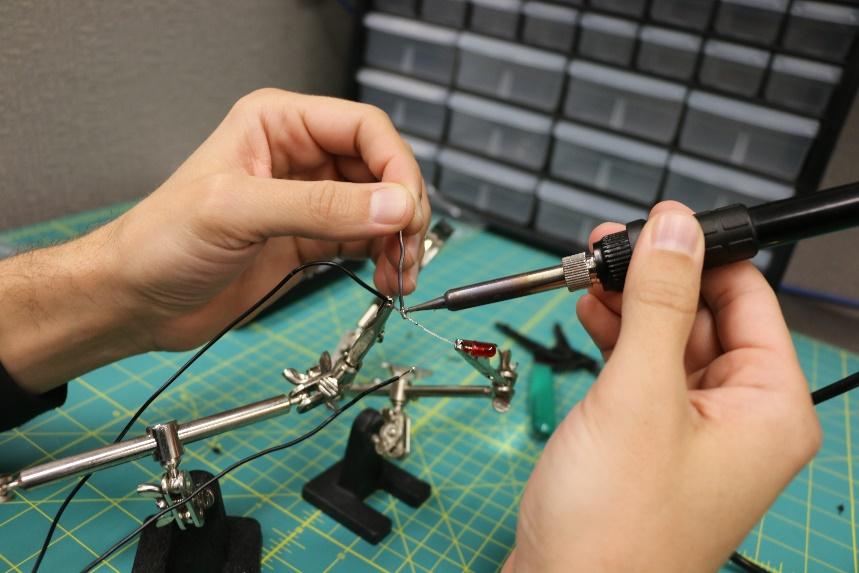
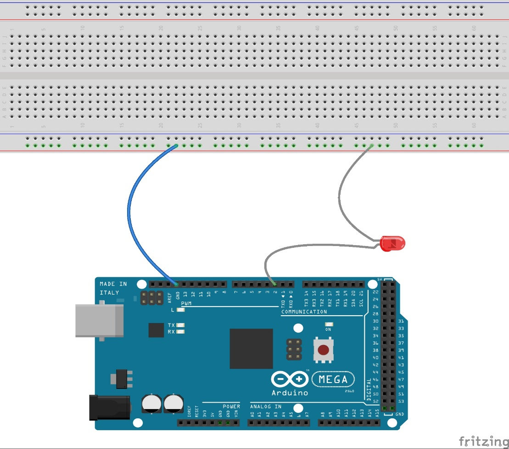
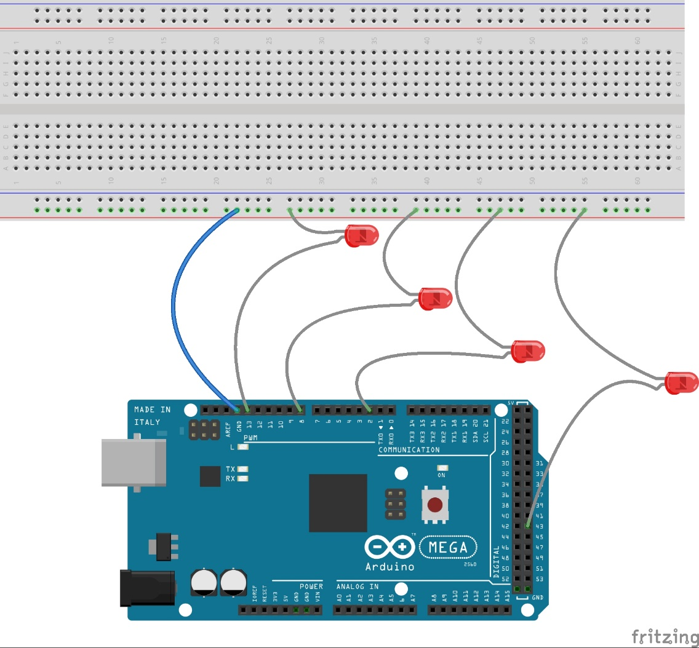
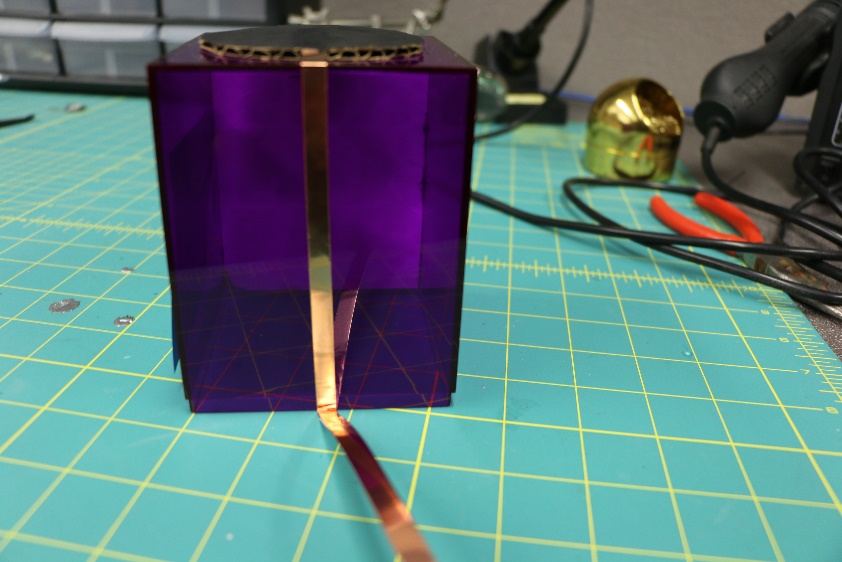
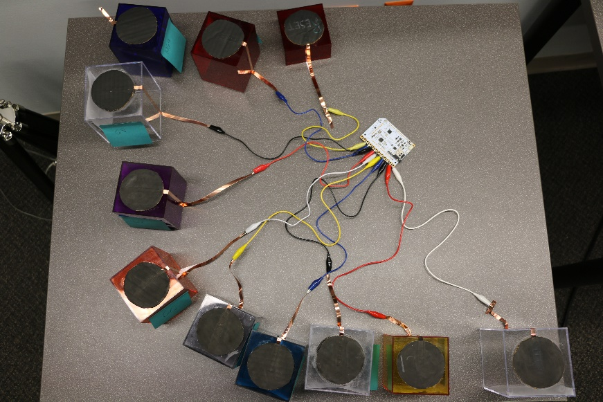
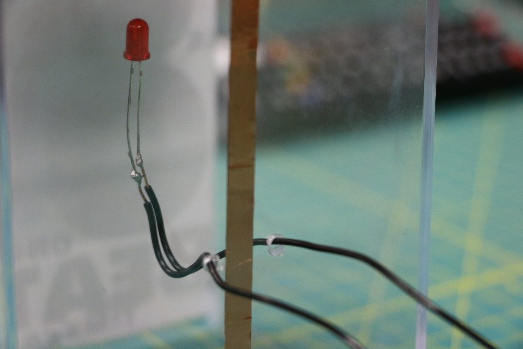
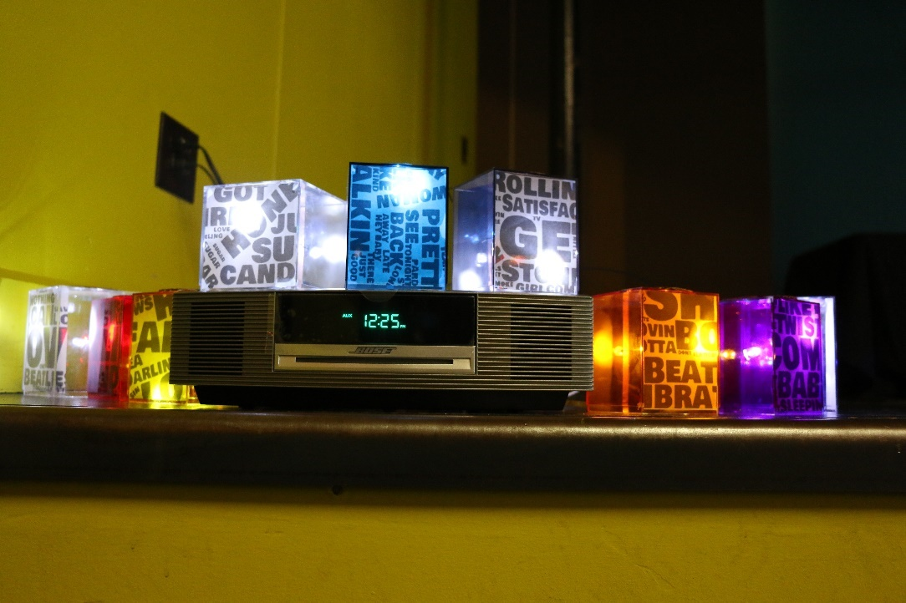

“Delivering” Critical Making: Exploring Rhetorical Delivery’s Impact on the “Maker” Project
Steven Smith
North Carolina State University
(Published September 18, 2019)
Introduction
“Musical Vitality” is a project I developed with a group of undergraduate students in the course “Digital Rhetoric (and Writing) with Arduino and Processing” at North Carolina State University. This 300-level course was primarily designed with juniors and seniors in mind and had a goal of teaching students how to create touch-based, interactive projects which were aimed to be rhetorically persuasive towards an audience. Using items like an Adafruit 12 x Capacitive Touch Sensor, conductive paint, an Arduino Uno, and copper wire, and bolstered through practical experience in Processing (a coding language typically used by visual designers), students would create projects using audio, video, text, and images in an attempt to blur the line between the digital and physical through their hand-made projects. After a semester-long endeavor of studying Processing and physical computing practices (soldering, wiring, implementation of code, etc.), students collaborated in groups to create various attention-getting projects, such as a capacitive touch painted door that, when opened, projected an image of an alternate reality or an interactive installation of music (explored more fully in this article).
The inclusion of physical computing practices in the classroom at North Carolina State University is justified by teaching students the aspects of “digital” rhetorical persuasion and is achieved by exploring how rhetoric is often practiced in the digital era; that is, we must go beyond pen, paper, and even works regarding the use of the personal computer and explore other avenues of rhetorical persuasion–in this case, those which braid digital and analog systems together. Through this eversion, or the “hybridization that now characterizes the relationship between cyberspace and the physical realm,” as it is often referred to as in maker-scholarship, student outcomes were to gain knowledge in physical computing practices, create persuasive projects, and understand how to translate ideas from print to digitally-interactive media (Rieder 5).
The approaches to teaching digital rhetoric in this context—that is, through the inclusion of digital technologies and physical computing—draws inspiration from the constructionist theory of education developed by Seymour Papert and Idit Harel. This theory “emphasizes the importance of actively making things” and “gives prominence to how the learner’s logical reasoning and emotion-driven reasons for engagement are inseparable” (Ratto 254; Mackrell and Pratt 419). Through constructionism, one uses physical objects “as a way of connecting to the sensorimotor ‘body knowledge’ of a learner to more abstract understandings” while seeking to “overcome to the ‘rigid’ style of work typically associated with [computers]” (Ratto 245). The relationship between critical making and constructionism, however, should focus on “social concepts and scholarly work, rather than math, science, or engineering” (254).
In “Digital Rhetoric (and Writing) with Arduino and Processing,” the emphasis is not necessarily on the teaching of rhetoric, but rather on coding and the physical manipulation of objects; additionally, it stresses the relationship between the body (making) and computers and allows for students to work with basic engineering principles such as wiring. That said, the underlying theme of the course was still for students to grasp an understanding of how these practices could lead to digital, rhetorically persuasive projects. The written components required with each major assignment allowed for students to reflect on their projects regarding how the project was made, as well as the rhetorical implications that the project could have on an audience. The success of this maker-oriented classroom comes not only from the objects that are crafted (though there is surely a sense of self-pride amongst students for completing these projects), but also from the reflective pieces written on those projects which showcase the students’ understanding of what it means to create digital, rhetorically persuasive objects.
Take, for example, a rather simple project crafted by myself and three other undergraduate students in the class called “Musical Vitality.” This installation was first an interactive disc jockey (DJ) table written solely in the Processing program. When the file was opened, the viewer was presented with a DJ table, and as s/he moved the cursor (which was overlaid with a hand) across the board, different sounds that are often associated with DJs played; for example, when the cursor-hand is moved across the turntables, then the sound of a record being “scratched” is heard. Other interactive noises embedded in the file include a kickdrum, laser-beam, and a bass note that is reminiscent of today’s electronic music.

Figure 1. Interactive DJ Table.
As the project continued, it slowly developed from a digitally interactive experience to one that would respond to the analog world via touch—a kind of “DIY” version of popular games akin to Guitar Hero or Donkey Konga. This was accomplished via the continued use of Processing and the inclusion of the Arduino Mega 2560, a microcontroller used in the creation of digital devices that can be physically manipulated by the user. Although the initial plan was to continue the development of the DJ table, these prospects changed, as do many maker projects, when the opportunity arose to present the project at “Matters of Media,” a showcase of North Carolina State University student media projects. The construction of a physical DJ table was scrapped, and the lighthearted sounds embedded in the code were replaced with various popular songs that would activate when a participant would physically touch their switch.
The multisensory project that is “Musical Vitality” seeks to explore the rhetorical conventions and implications of digital delivery and rhetoric via critical making. To achieve this, ten containers, each a different color, are placed on a flat surface. The top of each container is not only equipped with one thin strip of copper paint that goes down the side of the container, but it is also painted with electrical paint which allows the surface to be sensed by touch. For each container, an alligator clip is connected to the copper tape, which is then connected to a Bare Conductive Touch Board; this allows for an electrical current to run from the electrical paint and be registered by the Touch Board. For aesthetic purposes, an LED was placed in each container and two copper wires were soldered to each leg of the LED, which were then connected to various digital inputs found on an Arduino Mega 2560. The LEDs were coded to fade in and out according to the pace of the music. Lyrics to each chosen song were printed on transparent paper and placed inside of each container so users could read the lyrics; this also allowed for the LEDs to brightly shine. Once the sound files were uploaded to the Touch Board, and the code that was written in the Arduino software was uploaded to the Mega 2560, a viewer could simply place their hand on the top of each container to activate the installation.
As a project that follows the conventions of Matt Ratto’s definition of critical making, or the “act of using material forms of engagement with technologies to supplement and extend critical reflection and, in doing so, to reconnect our lived experiences with technologies to social and conceptual critique,” “Musical Vitality” draws design elements from the rhetorical canon of delivery (Ratto 253). In particular, I draw from contemporary delivery via the works of Robert J. Connors (1983), Collin Gifford Brooke (2009), and Sean Morey (2015) and the ways that digital delivery can be used as a means to create a rhetorically persuasive installation. Before introducing the instruction set for “Musical Vitality” and how principles of rhetorical delivery may be used in critical making, perhaps it is best to fully articulate the potential relationship between rhetorical delivery and critical making, beginning with a brief overview of delivery traditions.
“Delivering” Critical Making
According to Richard A. Lanham in his 1991 work A Handlist of Rhetorical Terms, the original canon of delivery was divided into two parts: voice and gesture. The former of these subdivisions, voice, was necessary for oration in the classical period given that venues of the time were unamplified, thus requiring the orator to develop strong lungs and an ability to project messages clearly across enormous amounts of space. The latter subdivision, gesture, focused on a directory of hand positions and body poses, which was most prominently taken up by modern history rhetoricians such as John Bulwer in Chirologia: or the Natural Language of the Hand (1644) or Gilbert Austin in Chironomia, or a Treatise on Rhetorical Delivery (1806).
Contemporary scholars of rhetorical delivery have begun to explore the implications of digital technologies and their potential impact on the undervalued canon. For example, in his work “Actio: A Rhetoric of Manuscripts,” Robert J. Connors attempts to place delivery in relation to writing as the “format and conventions of the final manuscript as it is sent in, handed in, or given up” (64). He argues that delivery, in regard to print format, is split up into three categories, type/typefaces, paper, and typography/layout, and that each of these categories impacts the ways in which a reader comprehends a document. Although the argument could be made that the manipulation of type/typefaces, paper, and typography/layout are elements of style, Connors’ attempt at reinventing delivery in writing practices is admirable, though perhaps outdated given its 1983 publication date.
Collin Gifford Brooke has also sought to revive delivery, but in the context of new media. In chapter 7 of his work Lingua Fracta: Towards a Rhetoric of New Media, Brooke makes the argument that scholars should see delivery as both a practice and a performance, as opposed to its traditional roots as a transitive process between a speaker and audience. Keeping in mind the idea from classical antiquity that successful delivery requires good personal character (ethos), Brooke believes that online, interconnected media can cultivate performative environments that allow for the transmission of information. To justify this theory, he cites two examples (one from a personal blog, and another a critique of Wikipedia) demonstrating how anonymous online users establish ethos by delivering credible content to open-source interfaces such as Wikipedia. Delivery in new media, then, is the act of establishing ethos in networked environments and using that credibility to create discourse capable of circulation.
Both “Actio: A Rhetoric of Manuscripts” and Lingua Fracta are undoubtedly valuable works on delivery, but each misses the opportunity to explore the traditional aspects of voice, gesture, and general manipulation of the body. As such, Sean Morey’s book Rhetorical Delivery and Digital Technologies: Networks, Affect, Electracy seeks to address the ways that delivery and digital technologies interact with one another; this approach allows scholars to reevaluate the relationship between delivery, online discourse, and embodiment. While the entire book is dedicated to the relationship between technology and delivery, of particular importance is his inclusion of the theory posthumanism, wherein he argues that digital technologies are a kind of prosthesis to the hand that allow delivery to extend through cyberspace networks. For Morey, the idea of delivery still very much involves the body but with an emphasis of the body’s extension into virtuality. The significance of the reciprocal relationship between the “deliverer” and “audience” is still stressed, and it is ultimately the connection between deliverer/audience/digital technology that blend together and push us to become posthuman.
There are, of course, other works that delve into digital delivery, including Kathleen Welch (1999), James E. Porter (2009), Ben McCorkle (2012), and Douglas Eyman (2015), but for my particular critical making project I found the bulk of the inspiration primarily came from Connors (1983), Brooke (2009), and Morey (2015) while focusing more on the embodied/gestural aspects of delivery than the vocal. In his work “Actio: A Rhetoric of Manuscripts,” for example, Connors asks the vital question “what can a writer do in terms of the physical object she presents to the reader that will affect that reader’s disposition toward her and her message?” (65). Such a question could lead to the consideration of the physical makeup of a project wherein a specific font, size, and or overall general layout should be considered so that a participant could, as per the suggestion of Connors, “concentrate on the comprehension” of the installation (72). Likewise, Brooke’s analysis that interconnected media, such as the media of our body, the construction of the project, and the naked networks that connect their interaction, may allow for information transmission between actor (the installation) and audience (participant)—from a rhetorical perspective, this would ideally entice participant engagement which would, in turn, increase the maker’s ethos.
Ultimately, though, Sean Morey’s inclusion of posthumanism and its application to digital delivery offer what I believe to be the biggest contribution to critical making, at least pertaining to “Musical Vitality.” For example, early in his work Rhetorical Delivery and Digital Technologies: Network, Affect, Electracy, Morey writes that “digital writing technologies—through which the body again becomes visible and telepresent—invite a reevaluation about what delivery can offer rhetorical studies and writing practices” (1). Although he is referring to digital technologies in their entirety, more specific examples could be augmented reality technologies, virtual reality, global position systems (GPS), or even those mentioned throughout this research, such as the Arduino Uno and capacitive touch shields. His theory on delivery largely draws from classical notions of the canon and posthuman scholarship via the work of Donna Haraway and N. Katherine Hayles and seeks to resituate delivery “within current writing technologies” (8). Digital delivery’s emphasis on current digital writing technologies allows for a reevaluation of what “written” scholarship should view as writing; no longer should scholars of rhetoric be constrained to word-based writing systems, but instead they should seek to explore other avenues, like those used by computer programmers—for example, Processing.
His inclusion of the theory of posthumanism may also provide interesting insight on the relationship and viability between critical making and digital rhetoric. Morey believes that, through digital technologies and theories of posthumanism, we are using the tools of delivery to create “an affective attunement with the audience” (216). The assemblages that a deliverer, or creator of an installation in this case, create ultimately “extends to the audience within/throughout a rhizomatic structure” and because of that, “digital delivery requires not just a performance of the deliverer, but it requires the audience to perform and take a role in the delivery process” (220). Thus, for digital delivery to occur, there needs to be a reciprocal relationship between the deliverer and the audience, and this is accomplished through that which is being delivered. The result of this process would be the rhetorical impact that transmission has on the audience.
While this section sought to explore the relationship between critical making and rhetorical delivery, subsequent sections offer an instruction set of the installation “Musical Vitality,” and an analysis of the installation via the principles of rhetorical delivery that were considered from Robert J. Connors, Collin Gifford Brooke, and Sean Morey. On a grander scale, this analysis ideally shows how rhetorical delivery could be used during the design phase of a critical making project.
Instruction Set
Required Materials
Many of the items here can be purchased in a bundle package from the Adafruit online store. For example, purchasing an Arduino Uno1 comes with a breadboard, wire bundle, and several 5mm LEDs.
- 1 – Arduino Mega 2560 or Arduino Uno
- 1 – soldering iron and roll of solder
- 1 – breadboard
- 1 – breadboarding wire bundle
- 12 – short wire alligator clips
- 1 – spool of 20 gauge copper wire (scale of project will determine size of spool)
- 1 – copper foil tape with conductive adhesive
- 1 – LED mixed bag – 10mm (10mm LEDs may be substituted with 5mm LEDs)
- 1 – Bare Conductive paint pen – 10mL
- 11 – multicolored (or clear) containers
- 1 – speaker system or computer with speakers (laptop preferred for transportation)
- 1 – USB A to B cable
- 1 – Bare Conductive Touch Board
- 1 – auxiliary cable
- 1 – microSD card
- 11 – pieces of construction paper cut into small circles (the thicker the better)
- 1 – stick of glue (superglue works best)
- 1 – paintbrush (optional)
Digital Instructions
This portion of the installation involves uploading the code to the Arduino and the desired songs/sounds to the Bare Conductive Touch Board.
Step One: Acquiring the Sketch
To begin, visit the sketch LED link here and download the Arduino code that is necessary to activate the LEDs.
Once the code has been downloaded, simply copy and paste it into a blank Arduino sketch. With your Arduino plugged in, click the “Upload” button. You may alter the code as you wish by changing the brightness of the LEDs or the rate at which each fades. For my project, I counted the time signature of each song and manipulated the code so that the LEDs faded in sync with the beat of the song.
Step Two: Adding .mp3s to the Bare Conductive Touch Board
This is a relatively simple process. For the best directions, click here. Depending on your project, you may include sound effects, songs, or any kind of .mp3 file you wish.
LED Instructions
Wiring for the LEDs is likely the most time-intensive part of this project, but once a general understanding of cathodes (positive) and anodes (negative) is acquired, it becomes much simpler. Be mindful that the longer leg of each LED is the positive node, and the shorter is the negative.
Step One: Soldering the LEDs
Each LED will need to be soldered to provide enough length to connect to the Arduino board. To do so, solder each leg of the LED to the desired length of copper wire. Repeat this process for each LED.

Figure 2. Soldering.
Step Two: Readying the Breadboard
To begin, take one wire from the wire bundle and connect it to the (–) slot on the breadboard. Take the other end and connect it to the GND input on the digital side of the Arduino.
Step Three: Connecting the LEDs to the Breadboard, Arduino
Keeping in mind the cathode(+) and anode (–) of each LED, take the positive leg and insert the copper wire into Input 2 on the Arduino board. Next, take the negative leg and insert it into the same (–) row on the breadboard as the GND wire.
Note: If you are using an Arduino Uno, you will begin with Input 3—the code may need to be slightly altered as well.

Figure 3. Powering the LEDs.
Step Four: LED Test
At this point, if you have uploaded the code to your Arduino, the LED should simply turn on when the wires are properly connected.
If your LED does not turn on, ensure you have thoroughly followed the above steps. One common problem is having the GND wire from the breadboard accidently inserted into the analog input on the Arduino.
Step Five: Adding LEDs
Continue adding LEDs. Subsequent LEDs will go in chronological order from 2, so the next LED’s cathode will go into Input 3 and its anode will go into the same row as the other wires on the breadboard. Repeat this process until each LED’s leg has been inserted into the digital inputs of the Arduino and the (–) of the breadboard.
Note: If you are using an Arduino Uno, you will be forced to stop at Input 11, as it is the last digital input. If you are using the Mega 2560, you may go to pens 44, 45, and 46.

Figure 4. Powering multiple LEDs.
Step Six: LED Test
At this point, all 11 LEDs should be connected to the Arduino and breadboard. Ensure each LED works before continuing.
Physical Installation Directions
This portion of the instruction set will explain the assembling of the physical components to this project.
Step One: Container Construction and Conductive Paint
Take one clear container, discard the lid, and turn it upside down. Then, take one circle of construction paper, glue one side, and place it on the middle of the container. Press and hold tightly to ensure it stays. Next, take (approximately) 8in. of copper tape and run it from the center of the circle and down the back of the container. A small strip of copper tape should hang off the back.
Take the Bare Conductive paint pen and add a dab of it to the construction paper (note: a little bit goes a long way). Using a paint brush (I found my fingers worked best), spread the paint to cover the entire surface of the paper, including the copper tape. This ensures an electrical current can run from the circle to the copper tape. Repeat this process until each container’s circle/copper tape is overlaid with conductive paint.
Note: Overlaying the copper tape with electric paint is not necessary but does ensure slightly better electrical flow.

Figure 5. Capacitive Touch Container.
Step Two: Adding the Bare Conductive Touch Board
Take a pair of alligator clips and attach one end to the Bare Conductive Touch Board and the other to the copper tape on the container. Be mindful of which sound input you want to be connected to each container. For example, E0 on the Touch Board will likely be connected to the first container. Repeat this process for each container.

Figure 6. Touch Board and Containers.
Note: Because there are so many alligator clips and wires involved, it is difficult to make what lies behind the containers aesthetically pleasing. Increasing the amount of tape used to add length to the project may help.
Step Three: Adding the LEDs
Reconnect the LEDs to Arduino inputs 5-13, and 44, 45, and 46 (if you have a Mega 2560). At this point, the LEDs should be connected to both the Arduino and the (–) input on the breadboard. Manipulate the wires as necessary and place them inside each container.
Note: I soldered a small hole in the back of each container to hold the lights and help with light distribution.

Figure 7. Soldered holes for LED.
Step Four: Testing “Musical Vitality”
Plug in your Arduino and Bare Conductive Touch Board to the desired power source. Next, take an auxiliary cable and plug into the speaker jack of the Touch Board and into a speaker.
With everything properly connected, by touching any of the “buttons” on the container, a song should play through the speaker while the LEDs fade in and out at different times. Congratulations, you now have your own working touch, sound, and sight installation!

Figure 8. The final installation.
Note: In the final installation, song lyrics printed on transparent paper were glued to the front of each container so that the audience could not see wiring inside of the containers.
Instruction Set Conclusion
My hope is that the goal of this instruction set is clear enough that a user may create their own musical installation, whether that may be a direct replication of “Musical Vitality” or by altering the code for their own, unique projects. That said, the following section, “Delivering” “Musical Vitality” more fully illuminates how rhetorical delivery could be used in the production of a critical making project.
“Delivering” “Musical Vitality”
As noted in the Instruction Set of this chapter, the first portion of the project was working through the Processing language in order to manipulate the LEDs to “flow” with the music that we had selected. The code itself was relatively simple—each LED was coded to a particular input on the Arduino and each was set to match the time signature of the selected song; for example, for one song, Roy Orbison’s “Pretty Woman,” which is a relatively fast-paced song written in 4/4 signature, the LED was set to fade in and out at 14.5 milliseconds. This process was repeated a total of 10 times—one for each song chosen.
Like many of us in the humanities, I found my inability to properly code (that is, using common practices like “loops” or properly understanding how the “plane” worked) somewhat troublesome. Although Processing itself is meant for beginners, it still is a powerful language with a proper understanding of certain mathematic principles like trigonometry. Nonetheless, Morey’s call to situate delivery “within current writing technologies” allowed me to think through writing a piece of code that would manifest itself into the world and act “rhetorically” through a physical computing project—in this case, the blinking LED bulbs (8). The LEDs themselves were designed to create the “affective attunement with the audience” that Morey mentions and draw the audience in to ultimately engage with the product itself—a rhizomatic structure, if you will (or at least one insertion point that invites a participant to engage with the exhibition), and one that would provide one avenue for a rhetorical transmission to occur (216). The act of coding itself, regardless of the level at which I could write, allowed me to think beyond common writing practices to examine how coding could lead me to create a critically made project that could draw an audience in.
As I worked through the LED apparatus of the project, I began to consider the ways in which we, as critical makers, often find ourselves using digital technologies that allow for the insertion of ourselves into a medium, whether it be through voice, touch, motion tracking, etc. Like the other facets of this project, the inspiration for this thought came from a close reading of Morey’s work, specifically chapter 6, titled “Posthuman Gestures and Electrate Attunements.” Without delving too far into the theoretical aspects of this chapter, Morey essentially makes the case for how our bodies have become posthuman because of the ways they are augmented by technologies that allow us to easily network, or connect, with other bodies—e.g., a cellphone and how we utilize it as a gateway to other networks, whether it be through texting, social media, forums, etc. If it is the posthuman body that “performs the operations of delivery on behalf of the deliverer,” then physical computing objects, such as the Arduino and capacitive touch shield, can play a significant role in this process by allowing the performer to insert themselves into the medium (216). By asking audience members to engage with “Musical Vitality” via “inserting themselves” into the installation, I was attempting to put Morey’s ideas of the posthuman into practice by creating an “affective attunement with the audience,” notably through a haptic experience with sound (216).
In order to explore how a member of the audience could insert themselves into “Musical Vitality,” 11 clear containers were equipped with Bare Conductive paint, a piece of copper tape, and then connected to the Bare Conductive Touch Board. LEDs were connected to the Arduino Mega, which acted as the on/off switch. The initial idea behind this was that by touching the containers and turning on the music, one would essentially provide a pulse to the flickering LEDs. What I came to realize, however, through the theoretical groundings of Morey’s Rhetorical Delivery and Digital Technologies, was that the installation itself was a reflection of how we become posthuman via digital technologies that allow us to insert ourselves into the medium at hand. Simply by touching the container, members of the audience extended themselves into the media of both the Arduino and the Bare Conductive Touch Board, and this resulted in the affective attunement with others that were near the project. The actions of those engaging with the project not only acted as a switch within these technologies to fulfill the commands of the Touch Board, but they also re-projected our actions into the world—in this case, through the playing of music. As a member of the audience views the project, they too become part of this everted reality that operates within the digital and analog world.
Sean Morey was not the only rhetorical scholar used in this production, though he undoubtedly provided the bulk of the inspiration. Both Robert J. Connors and Collin Gifford Brooke offered elements of rhetorical delivery that were used in the production of this installation. For example, keeping the conventions presented by Connors in mind (type/typefaces, typography/layout) a specific font (Ariel Black) and size (which varied to break up monotony) was chosen for the containers that was legible and appropriate for the installation. Brooke, on the other hand, allowed me to think through the ways that the transmission of information (in this case, the music) could occur between bodies (participants) and media (the installation) and how there were certain design principles that could be followed to bolster ethos (such as choosing a font that could be read by a wide audience).
“Musical Vitality” was, during its inception, designed with the traditional notion of rhetoric in mind—that is, how, or in what ways, could a rhetorically persuasive project be made? I soon came to realize through scholars of digital delivery such as Robert J. Connors, Collin Gifford Brooke, and Sean Morey that I could create an everted reality project, which would allow users to reciprocally migrate between the digital and analog world. This extension began with the code (in the delivery terms of Sean Morey, a more computational method of writing) written in Processing that was uploaded to the Arduino, which fed power to the LEDs inside of the containers, thus serving as an insertion point for the greater rhizomatic structure that was the project itself; from the Bare Conductive Touch Board to the capacitive touch sensors on the containers, which allowed the audience to insert themselves into the medium; and from the containers themselves to a member of the audience interacting with it, until, ultimately, a feedback loop was created, allowing for the affective attunement that Morey theorizes about in the latter half of his work. Although I am unsure of whether this is a common approach to critical making, I believe that using rhetorical scholarship can help guide us, as “makers,” to create engaging projects through various technologies and, in turn, allow us to hold true to critical making’s purpose: “to supplement and extend critical reflection and, in doing so, to reconnect our lived experiences with technologies to social and conceptual critique” (Ratto 253).
Conclusion, Reflection, and Future Studies
Throughout this research, I have proposed the idea of using the conventions of rhetorical delivery to craft an engaging, critically made project. The inclusion of Robert J. Connors “Actio: A Rhetoric of Manuscripts,” Collin Gifford Brooke’s Lingua Fracta, and Sean Morey’s Rhetorical Delivery and Digital Technologies provided the theoretical framework for which I could explore how digital technologies, such as Processing and the Arduino (though certainly not limited to these) could be used to create a persuasive, critically-made project. Various concepts from each author aided in the construction of “Musical Vitality,” such as Morey’s notions of digital writing technologies which allowed me to write a piece of code that was capable of being rhetorically persuasive when uploaded to the Arduino; the LEDs and their ability to draw members of the audience in; and the capacitive touch containers that allowed a user to insert themselves into the medium via pressing a hand-crafted “button.” Connors’ call to keep in mind the aesthetics when delivering a document also went hand-in-hand with Brooke’s desire to bolster ethos through proper decision making. Perhaps, then, scholars should begin to consider the ways that other rhetorical canons, such as style or memory, could be formulated into critical making projects.
“Musical Vitality” was met with positive reviews, notably how simple it was to interact with, and the inclusion of the flickering LEDs that served as an attention-trap. In hindsight, there are a few aspects of the project I would change: rather than simply using music, I think that exploring a more haptic approach would be more engaging for interactors. For example, each container could be bound to a specific musical instrument, and by touching each container a user is able to create their own musical score. This type of project would be reflective of popular games such as Guitar Hero or Donkey Konga, wherein a user plays a rhythmic game via a special controller. Additionally, I would like to add a qualitative component to this research, perhaps in the form of microethnographies, wherein I film users engaging with this project to explore how the body adapts to using capacitive touch technologies with a goal of being rhetorically persuasive.
Future studies on critical making could also continue to explore the ways in which physical computing/critical making projects may allow us, or our students, to learn the conventions of a subject, as was done in the course I shadowed called “Digital Rhetoric (and Writing) with Arduino and Processing.” Other projects could also expand beyond the Arduino and seek to explore Raspberry Pi, which can run multiple programs, whereas the Arduino Uno can only run one; another may be through something as simple as the creation of an interactive floormat, as was done by Jessica Handloff, Geoffrey Luurs, and Sarah Beth Evans in their project “The Ambient Sole: A Digital Engagement Project.” In the future, I hope to explore the Microsoft Kinect through a program called TouchDesigner and, using theories of affect and atmospheres, create a project capable of exploring spatiality and how the body changes in certain spatial contexts. That being said, the Arduino and Processing are exceptional tools for learning not only the conventions of coding and physical computing but also exploring avenues for blending rhetorical scholarship and critical making together, which I hope this piece will inspire others to do.
Notes
1. There are some advantages and disadvantages to purchasing an Arduino Uno over the Mega 2560. For starters, Adafruit no longer sells the Mega 2560, so it may be more difficult to find, and the Uno has an option for a bundle. The Mega 2560 is a bigger board and has far more digital inputs with power-width modulation (PWM) capabilities. In simpler terms, using a Mega 2560 allows the users to have more LEDs and more control over what the LEDs do in their installation.
Works Cited
Brooke, Collin Gifford. Lingua Fracta: Toward a Rhetoric of New Media (New Dimensions in Computers and Composition). New Jersey: Hampton Press, 2009.
Connors, Robert J. “Actio: A Rhetoric of Manuscripts.” Rhetoric Review, vol. 2, no. 1, 1983, pp. 64–73. JSTOR, www.jstor.org/stable/465639.
Eyman, Douglas. Digital Rhetoric: Theory, Method, Practice. Ann Arbor: University of Michigan Press, 2015.
Evans, Sarah Beth. “The Ambient Sole: A Digital Engagement Project.” Hyperrhiz: New Media Cultures, no. 13, 2015. doi.org/10.20415/hyp/013.s01.
McCorkle, Ben. Rhetorical Delivery as Technological Discourse: A Cross-Historical Study. Carbondale: Southern Illinois University Press, 2012.
Morey, Sean. Rhetorical Delivery and Digital Technologies: Networks, Affect, Electracy. New York: Routledge, 2015.
Porter, James E. “Recovering Delivery for Digital Rhetoric.” Computers and Composition vol. 26, no. 4, 2009, pp. 207–224. doi.org/10.1016/j.compcom.2009.09.004.
Mackrell, Kate, and Dave Pratt. “Constructionism and the Space of Reasons.” Mathematics Education Research Journal, Mathematics Education Research Journal, 2017, pp. 419–35, doi.org/10.1007/s13394-017-0194-6.
Ratto, Matt. “Critical Making: Conceptual and Material Studies in Technology and Social Life.” Information Society vol. 27, no. 4, 2011, pp. 252–260. oi.org/10.1080/01972243.2011.583819.
Richard A. A Handlist of Rhetorical Terms. 2nd ed. Berkeley: University of California Press, 1991.
Rieder, David M. Suasive Iterations: Retoric, Writing, and Physical Computing (New Media Theory). Anderson: Parlor Press, 2017.
Welch, Kathleen. Electric Rhetoric: Classical Rhetoric, Oralism, and a New Literacy. Cambridge: The MIT Press, 1999.